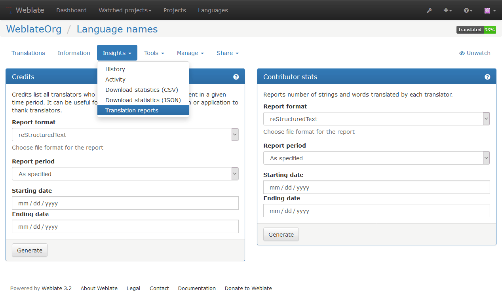

Translation progress reporting¶
It is often useful to be able to see how translation progresses over given period. For this purpose Weblate includes reporting features, where you can obtain summaries of contributions to given component over time. You can find the reporting tool in the Insights menu for a translation component:
Several reporting tools are available on this page and all can produce output in HTML, reStructuredText or JSON. The first two formats are suitable for embedding into existing documentation, while JSON is useful for further processing of the data.
Translator credits¶
Generates a document usable for crediting translators - sorted by language and listing all contributors to given language:
* Czech
* Michal Čihař <michal@cihar.com>
* Weblate Admin <admin@example.com>
* Dutch
* Weblate Admin <admin@example.com>
And it will get rendered as:
Czech
- Michal Čihař <michal@cihar.com>
- Weblate Admin <admin@example.com>
Dutch
- Weblate Admin <admin@example.com>
Contributor stats¶
Generates number of words and units translated by translators:
======================================== ======================================== ========== ==========
Name Email Words Count
======================================== ======================================== ========== ==========
Michal Čihař michal@cihar.com 2332 421
Weblate Admin admin@example.com 25 8
======================================== ======================================== ========== ==========
And it will get rendered as:
Name Words Count Michal Čihař michal@cihar.com 2332 421 Weblate Admin admin@example.com 25 8